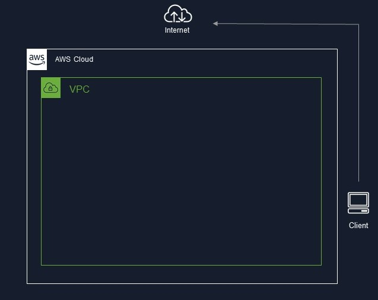
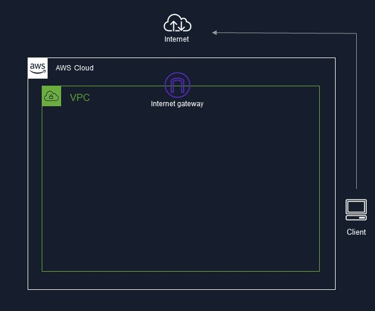
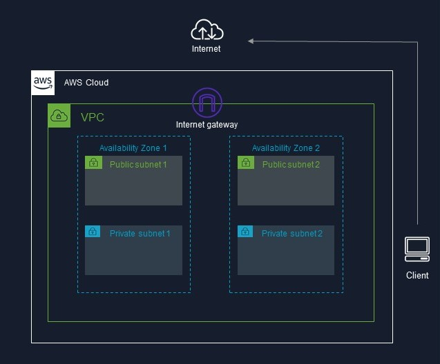
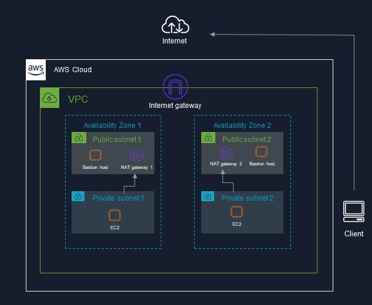
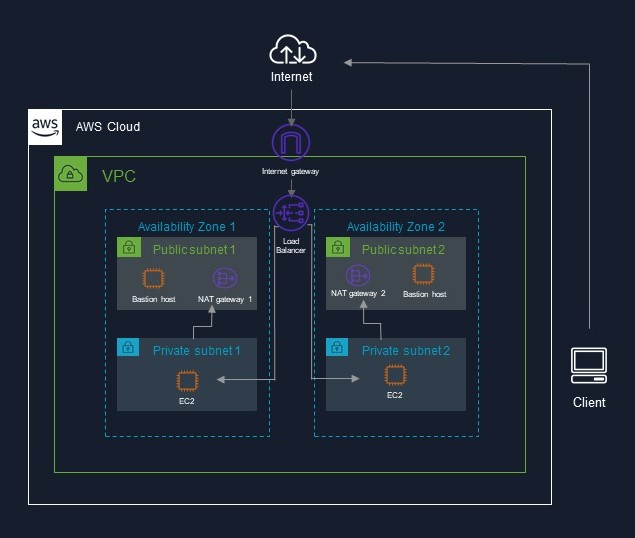

Every Computer Information Technology student at CSUN must take CIT 480 & 481 classes which prepares students for their senior design project. For our senior design project, my group and I decided to create a static website and host it on AWS. In todays blog, I will share our AWS infrastructure plan.
➔The infrastructure plan consists of a Virtual Private Cloud (VPC) within the AWS region.
➔ An internet gateway for connection to the outside internet.
➔Two different availability zones each with a private and public subnet.
➔ A single EC2 instance will be placed in each subnet. The EC2 instances in the private subnets will be where the website will be hosted from. The EC2 instances placed in the public subnet will act as bastion host. So my group and I will SSH into the EC2 in the publics subnet and then from there we will SSH into the EC2 in the private subnet. A NAT gateway will also be placed in the public subnet. Through the NAT Gateway the private EC2 instances will be able to connect to the internet but users from outside cannot initiate any type of connection to the private subnets.
➔ Because there is no way for traffic to get routed to the EC2 instances in the private subnets, a load balancer will be added. The load balancer will be attached to the VPC and the two public subnets so that way users from the outside can access our website.
